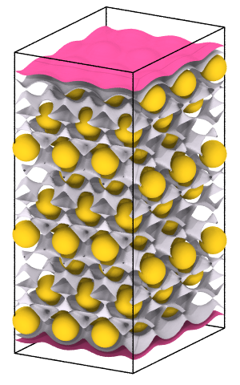

| Table of Contents | Create isosurface | Up |
|---|---|---|
| Prev | Modifiers | Next |
| Table of Contents | Create isosurface | Up |
|---|---|---|
| Prev | Modifiers | Next |

| Two isosurfaces of the charge density field: |
|

|
This modifier generates an isosurface for a field quantity defined on a structured voxel grid. The computed isosurface is a surface mesh data object and its visual appearance is controlled by the accompanying surface mesh visual element.
See the list of input file formats supported by OVITO to find out how to import voxel grids into the program. You can also apply the isosurface modifier to a dynamically generated voxel grid produced by the Spatial binning modifier.
Note that you can apply this modifier several times in a pipeline to create multiple surfaces at different iso-levels.
The option Transfer field values to surface lets the modifier copy all field quantities defined on the voxel grid over to the isosurface's vertices. This includes any secondary field quantities in addition to the selected primary field quantity for which the isosurface is being constructed, and which is constant and equal to the iso-level value on the entire surface. Subsequently, OVITO's Color coding modifier may be used to color the isosurface based on a secondary field quantity. The locally varying values for a secondary field quantity on the surface are computed at each mesh vertex using trilinear interpolation from the voxel grid values.